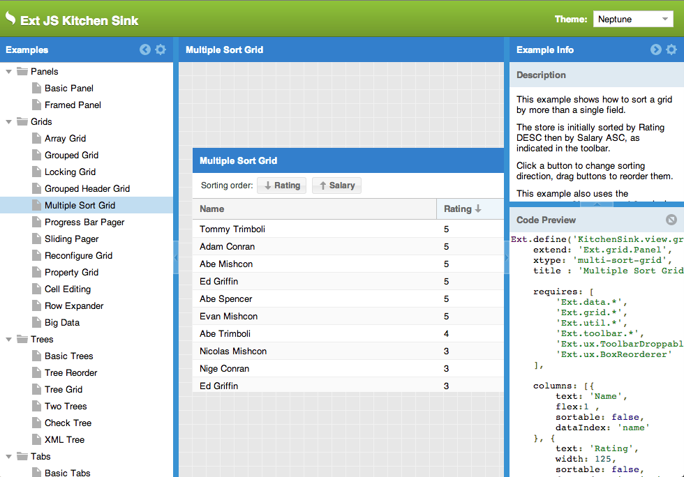
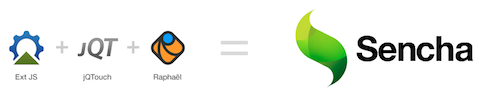
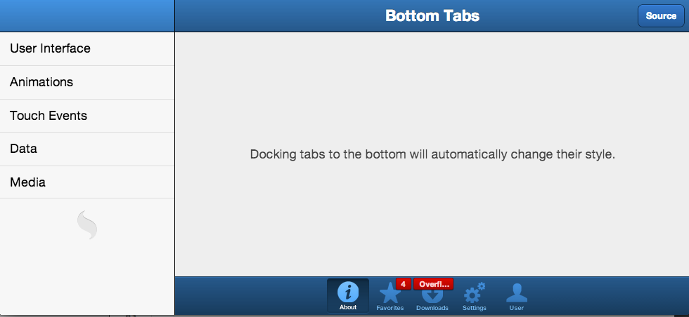
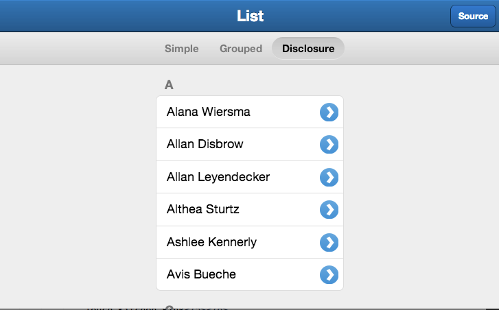
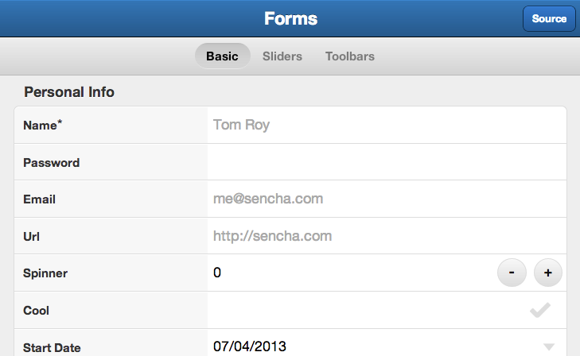
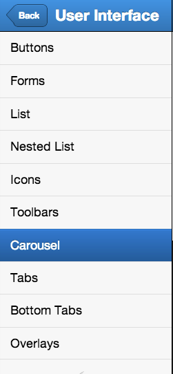
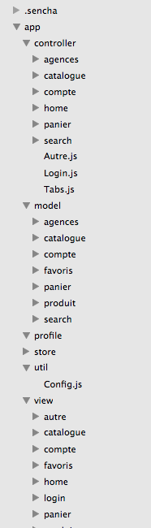

Sencha Touch
Nomades Ateliers, Genève, Juillet 2013
Présenté par Florent Lamoureux
Historique
ExtJS, ExtGWT
Palo Alto
55% des entreprises du Fortune 500 en clients
Ext-JS

Sencha Touch
Fondé en 2011
Multi plateforme
Une combinaison de projets open source

Critères d'évaluation
User Interface
User Experience
Modèle d'architecture d'application
Workflow
Communauté / docs
User Interface

User Interface

User Interface

User Interface

User Experience
Touch events
- touchstart
- touchmove
- touchend
- dragstart
- drag
- dragend
- tap
- singletap
- doubletap
- longpress
- swipe
- pinch (on iOS and Android 3+)
- rotate (on iOS and Android 3+)
User Experience
Single Page app
Ajax
Offline
Architecture MVC !

MVC
Se rapproche de l'architecture native
Permet de se familiariser avec les design patterns
RESTful
XML/JSON
Gestionnaire de dépendances
Worflow : Sencha CMD
De l'initialisation de l'application à la distribution
Génération d'élements (controlleurs...)
Intégration de SASS & Compass
Example

Communauté/docs
Docs ultra riches
Communauté assez présente
Support professionnel possible
Inconvénients
Environnement de dev plus complexe
Architecture à appréhender
Lenteurs sur les transitions
Conclusion
Se familiariser avec Sencha Touch améliore les compétences
Pour des petits projets, un gain de temps important
Ne pas utiliser pour des gros projets/ projets qui demandent de l'extreme rapidité de réponse
Merci !
Florent Lamoureux